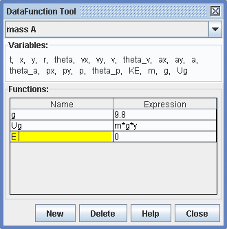

DataFunction Tool Help
The DataFunction Tool enables a user to create datasets that are functions of other datasets as shown in Figure 1. The input datasets are all in a linked DatasetManager, so they all share the same time base (or other base).
Figure 1. DataFunction Tool
The DataFunction Tool lists the input datasets in a Variables area starting with the shared base variable. Above the variables area is a dropdown that shows the Name of the data manager and below it is a table of user-defined Functions. In the "mass A" example shown, a user has defined "g" to be a constant and "Ug" to be the gravitational potential energy m*g*y. Note that m, g and y are all listed as variables and that user-defined functions become available for use by other functions as soon as they are defined.
The New and Delete buttons at the bottom make creation and management of functions easy. New functions are given a generic name and assigned the expression "0" as shown in Figure 2.
Figure 2. Creating a New Function
Note that "Ug" now also appears in the variables list for the new function.
Double-click a cell and enter text to change a name or expression as shown in Figure 3. As you edit the field turns yellow until you hit the enter key.

Figure 3. Editing a Function
If an unreadable expression is entered into an Expression cell the cell turns red. Function expressions must be valid mathematical expressions using only the variable names listed. In Figure 4, the expression K+U is invalid since neither "K" nor "U" is defined.
Figure 4. Invalid and Valid Expressions
The OSP expression parser recognizes all variables, standard operators + - * / ^ and boolean operators = > < & |, and common one and two-parameter functions shown in Figure 5.
Figure 5. Functions Recognized by the OSP Parser